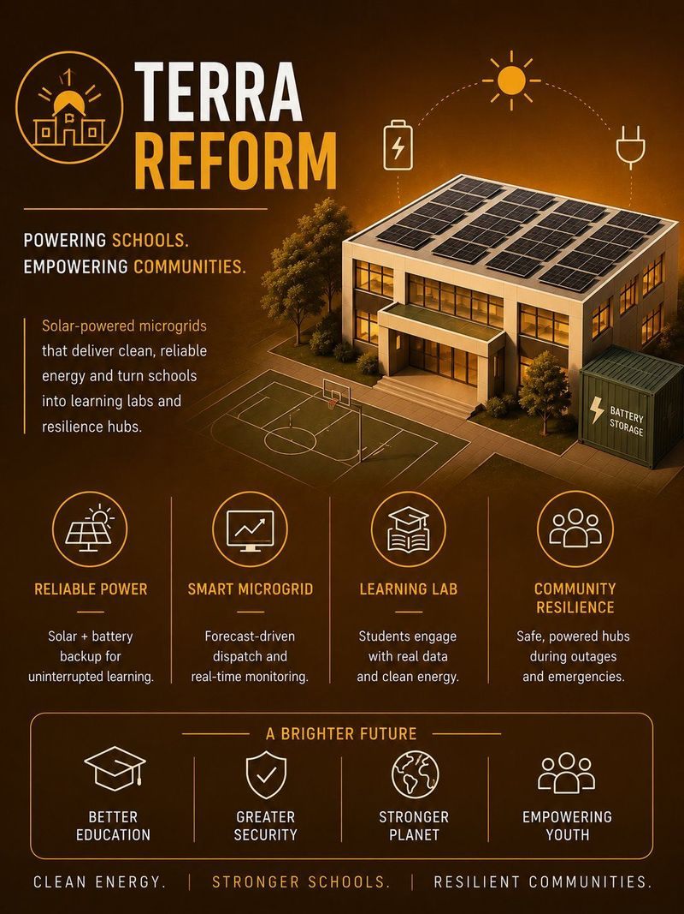
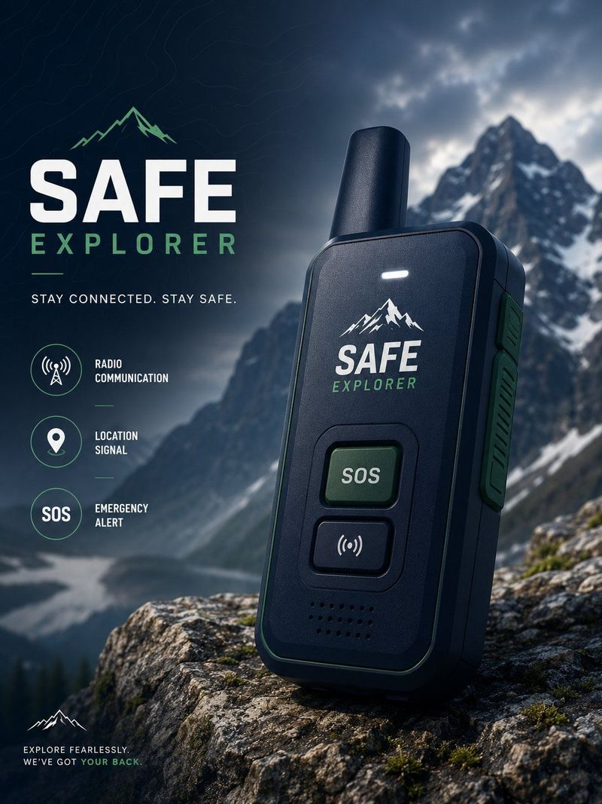
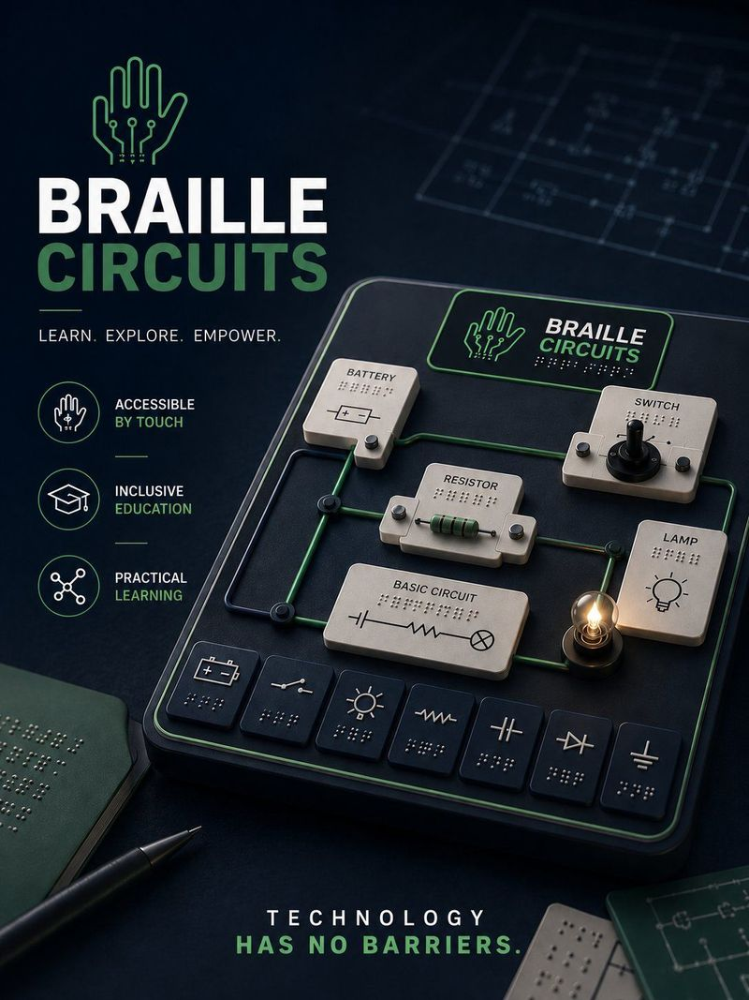
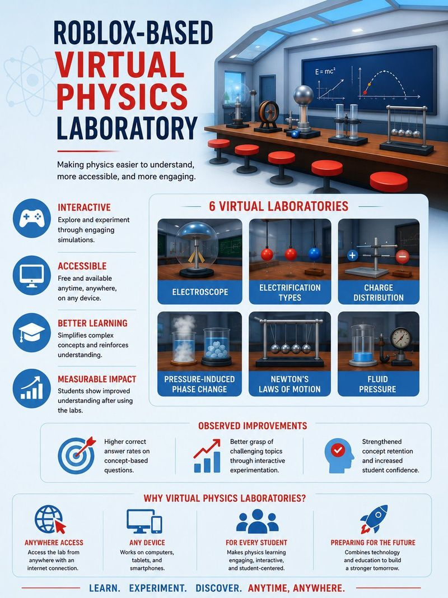
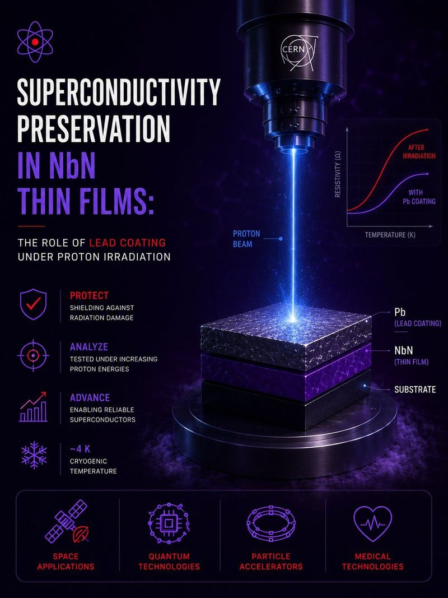
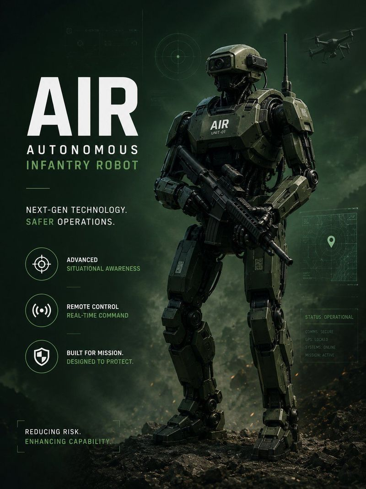
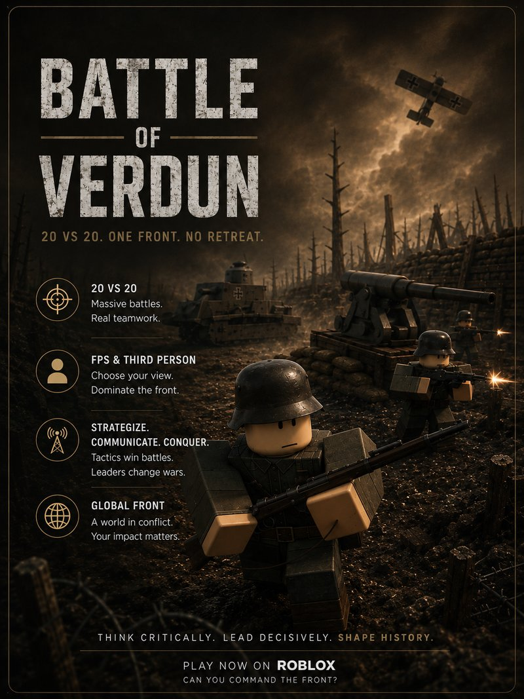

PROJECT SPOTLIGHTROBLOX

TÜBİTAK 2204-A · Regional Finalist
Virtual Physics Laboratory
Six interactive experiment rooms on Roblox. Explore physics by trying it yourself.
An independent community bringing high school and university students together through research, software, and engineering projects. Explore an idea, find teammates, and build something together.
Six interactive experiment rooms on Roblox. Explore physics by trying it yourself.
FIND YOUR STARTING POINT
Choose your starting point.
Then explore what we have built.
Explore projects in your field, discover ways to contribute, or bring your own idea.
Explore ways to join ↗Propose a collaboration where you can share your research, software, or engineering experience.
Share your experience ↗Explore the education projects and discuss classroom use or a collaboration idea.
Start a conversation ↗Our Work
Competition entries, research proposals, concept developments, and simulations — presented honestly.
Completed work, new possibilities
The original work cycles for these projects are complete. We welcome ideas to improve, extend, or build on them. Each project page explains the stage and output reached.

Original cycle completeImprovement ideas welcome
A proposal investigating solar generation, battery storage, and energy management to create clean energy hubs serving schools and communities as resilience anchors.

Original cycle completeImprovement ideas welcome
A portable emergency communication concept for outdoor sports and remote environments, using radio-based communication between users and central coordination stations.

Original cycle completeImprovement ideas welcome
An accessibility-focused project using tactile Braille-based representations to help visually impaired individuals engage with electrical circuit concepts and STEM education.

Original cycle completeImprovement ideas welcome
A Roblox-based interactive virtual physics lab that makes practical science education more accessible through simulations. Regional Finalist, TÜBİTAK 2204-A.

Original cycle completeImprovement ideas welcome
A proposed research project investigating lead shielding to protect NbN superconducting thin films from proton radiation, with applications in space tech and quantum systems.

Original cycle completeImprovement ideas welcome
A remotely operated humanoid robot concept — designed and function-tested as a virtual simulation prototype — with proposed applications in earthquake search and rescue and disaster response.

Original cycle completeImprovement ideas welcome
A large-scale 20 vs 20 multiplayer WWI experience on Roblox by Anatolia Studios — trench warfare and historically inspired battlefields, built through international student-led collaboration.
Have a research question, software idea, or engineering problem in mind? You can start the conversation before you have a prototype or a team.
Propose a new project →Focus Areas
Six interconnected disciplines — pursuing practical solutions at their intersection.
Research-driven experimentation, scientific inquiry, and evidence-based competition project development.
Designing and building prototypes that bridge the gap between theory and practical implementation.
Developing solutions to environmental and societal challenges through applied research and innovation.
Building digital tools, simulations, and applications that solve real-world problems at scale.
Making science and technology education more accessible, engaging, and hands-on for students everywhere.
Designing inclusive solutions that expand access to education, technology, and information for all.
"Throughout my thirty-three years in education, I have met many successful students. However, Deniz and Mahmut have left a truly special mark on me — not only through their academic achievements, but through their passion for science, their courage to create, and their desire to make the world a better place. This platform is a living example of what young minds can achieve when guided by curiosity, perseverance, and strong values."
Our Journey
From our first project to today — every step of the Terra Reform story.
The beginning — an independent, student-led science and technology initiative is born.
Find Out More
Learn about who we are, where we've competed, how to get involved, and how to reach us.
Our mission, vision, approach, and the core values that drive every project we build.
Learn More →The national and international competitions and programs we've taken part in.
View Programs →Become part of an international student-led innovation network and start building.
Get Involved →Stay in the Loop
Get occasional updates on new projects, competition results, and ways to get involved. No spam — just milestones.